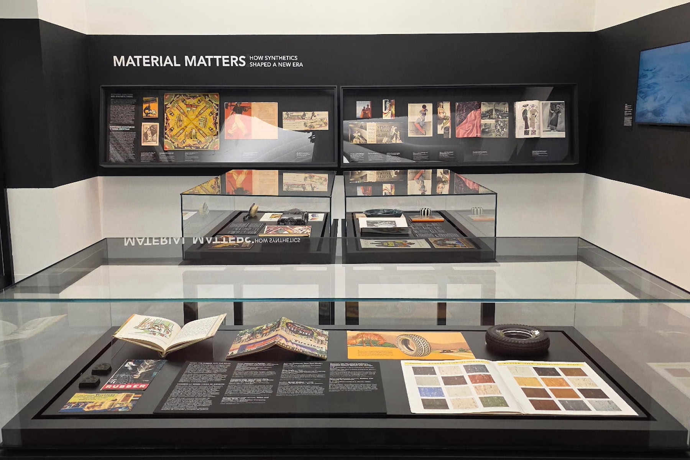
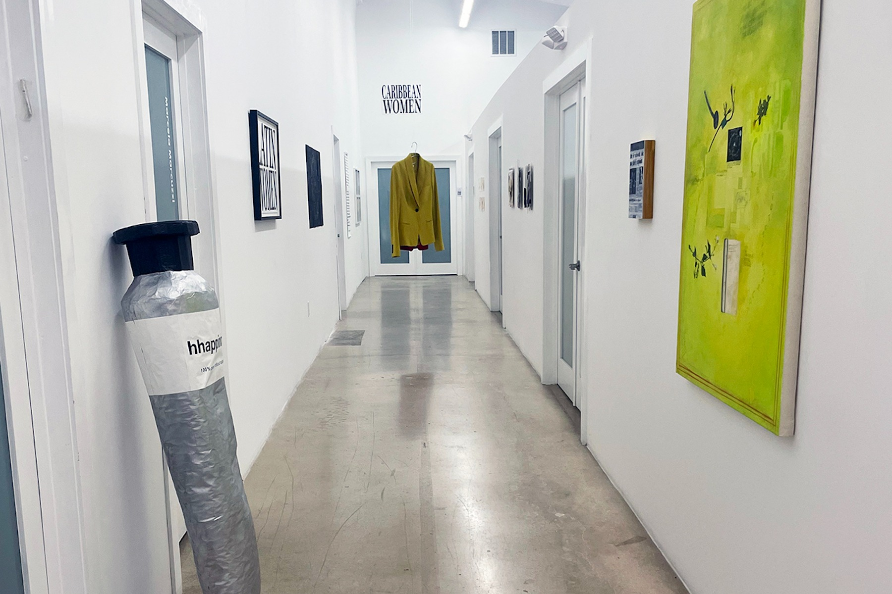
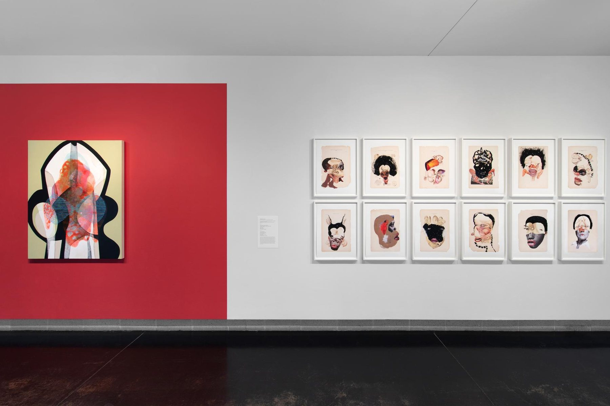
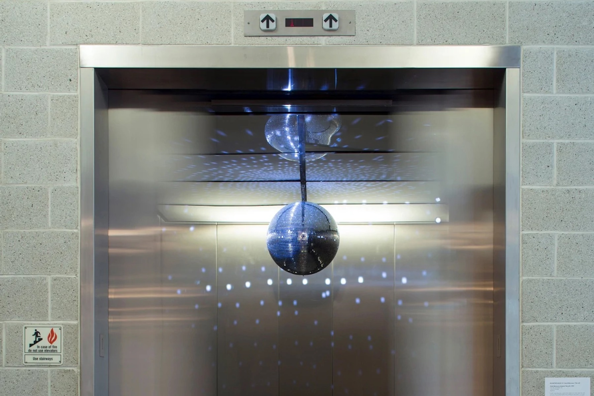
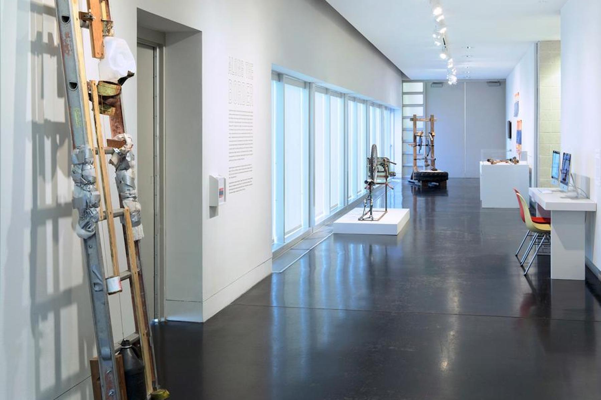
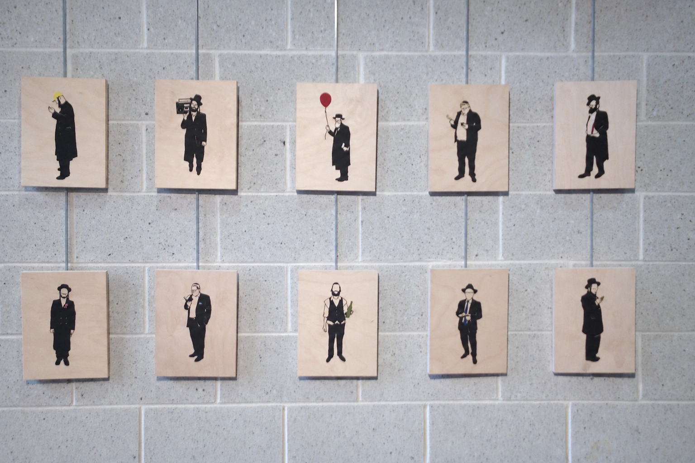

Material Matters2026






Molly Channon is a curator and writer based in Miami Beach. Her curatorial practice spans modern and contemporary art, material culture, and interdisciplinary exhibition-making.
Her broader museum work includes interpretation, digital experiences, publications, audience engagement, and academic engagement across college and university communities.
Selected exhibitions, publications, talks, and museum experience.